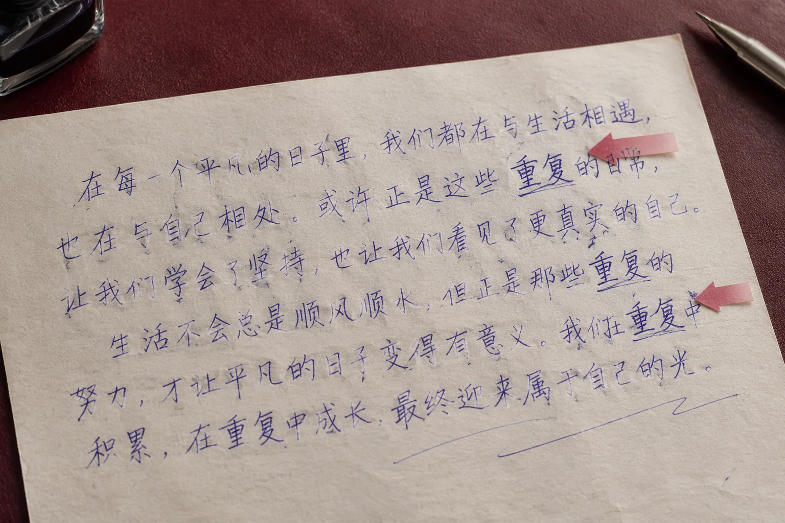

同一个字出现两次却不一样，模仿笔迹参考该保留哪一个
整理手写材料时，重复字最容易被挑出来比较。一次舒展、一次紧凑并不罕见，真正需要保留的是它们各自所在的语句。

别先替材料选一个标准答案
一页中同一个字写法不同，可能与前后连接、剩余空间和书写速度有关。模仿笔迹参考若只留下最工整的一次，材料就变成了经过挑选的集合。完整页面应先留存，再为重复字标注页码和行号。局部近照可以辅助观察，但不能取代它在原句中的位置。
把相同位置与不同位置分开看
句首、句中和行尾面对的空间条件不同。比较时先说明重复字在哪里，而不是立刻把几张截图拉成同样大小。几次出现都能看清的结构可以记录；只在一处出现的小变化则继续保留为个别现象。不要为了寻找规律，将模糊图片里看不见的笔画补成想象中的形状。
固定姓名也存在自然波动
模仿签名和模仿签字通常涉及固定内容，但固定内容不代表每次外形完全相同。样本应按一次完整签写来保存，不从多次落款中各选一个字拼成新图。拼接后的姓名可能看起来协调，却不是任何一次实际出现过的组合，参考来源也会因此变得不清楚。
观察记录不能越过材料条件
笔迹鉴定资料中的重复字可以提供比较位置，但单个字的相似或不同不足以支持整体结论。应同时记录原件、扫描或照片等来源条件，以及哪些地方无法辨认。材料不足就具体列出缺口，后续补充同类自然记录，比一味增加裁切图数量更有帮助。